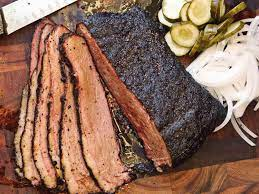

Smoked Brisket

Smoked Brisket
This is the description paragraph
Ingredients
- brisket
- salt 1/4 cup
- pepper 1/4 cup
- garlic powder 1/4 cup
- Beef tallow 1oz per 2 lbs
- tasteless oil
Steps
- trim brisket cap fat to ~1/8 an inch of fat
- mix salt pepper and garlic in a small container
- apply a thin coat of oil to brisket this will provide a base for the seasoning to adhere to while not imparting off flavors to the brisket
- cover the brisket in the salt pepper garlic mixture
- place seasoned brisket on a sheet pan in the fridge for an hourcooler meat accepts smoke better than room temperature meat so this step allows for a longer smoke time and thus a deeper smoke ring
- fire up coal bed and prepare wood for your smoking solution keep doors to your smoking solution open until white smoke is no longer produced then set up smoker to run at ~225 degrees F blue whispy smoke is a indicator of a good cooking smoke
- insert temperature probe into thickest portion of brisket and place inside running smoker
- at some point the brisket will stall when that happens place butcher paper on a table take brisket out of smoker and place on butcher paper fat side down. put beef tallow on the topside of brisket and wrap tightly in butcher paper replace probe in brisket and place back on the smoker and continue smoking until brisket reachs an internal temp of 186 degrees F
- when brisket reaches desired internal temp remove brisket from smoker wrap in towels and allow to rest in a cooler for at least an hour
How to Slice a Brisket
for optimal cuts heres a link to a handy and detailed guide on the cutting portion of this cook Barbecuefaq